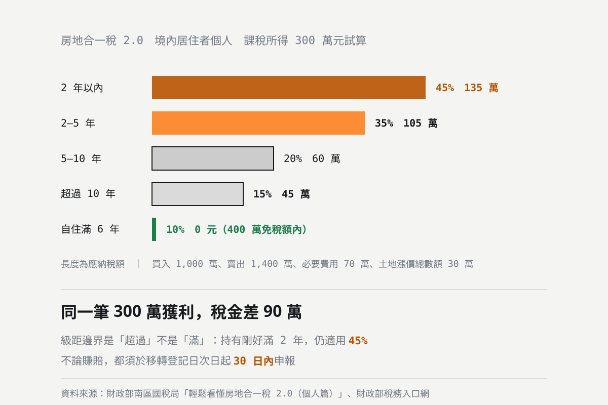

房地合一稅 2.0 完整試算：持有幾年、稅率多少、怎麼報？
賣房賺 300 萬，稅金從 45 萬到 135 萬，差距就看持有幾年。房地合一稅 2.0 把 45% 與 35% 的高稅率期間各延長一倍：持有 2 年以內 45%、超過 2 年未逾 5 年 35%、超過 5 年未逾 10 年 20%、超過 10 年 15%；符合自住條件者，課稅所得 400 萬元以下免稅，超過部分只課 10%。本文把級距、課稅所得的算法、申報期限與罰則一次講完，並附互動試算工具。

統計基準：本文的稅率級距、自住優惠條件、費用認列與申報期限，依財政部南區國稅局「輕鬆看懂房地合一稅 2.0（個人篇）」與財政部稅務入口網公開資料整理，查核日期 2026-10-13。文中的稅額數字為依前述稅率計算的範例，不是實際核定稅額。文末的互動試算工具在瀏覽器本機計算，不會蒐集或傳送任何輸入資料。
賣房賺 300 萬，要繳多少房地合一稅？答案從 45 萬到 135 萬，差了九十萬——差別只在持有幾年。
房地合一稅 2.0 自 110 年 7 月 1 日上路，最關鍵的改動就是把高稅率的持有期間各延長一倍。很多屋主的直覺還停在舊制，等到算出來才發現差距。
本文是制度整理與試算說明，不是稅務意見。實際稅額涉及取得方式、土地漲價總數額、費用認列與各項優惠的適用認定，個案差異很大，請以國稅局核定為準，或洽專業地政士、會計師。
先確認：你的房子適用房地合一稅嗎
- 01 105 年 1 月 1 日以後取得的房屋、土地，出售時適用房地合一稅。
- 02 其中在 110 年 7 月 1 日以後交易的，適用修正後的房地合一稅 2.0。
- 03 105 年 1 月 1 日之前取得的房地，出售時仍按舊制（房屋課財產交易所得、土地課土地增值稅）。
- 04 繼承或受贈取得的房地，持有期間可以併計前手的持有時間——這一點經常被忽略，卻可能直接把你從 45% 拉到 15%。
四個級距：持有越久，稅率越低
| 持有期間 | 稅率（境內居住者個人） |
|---|---|
| 2 年以內 | 45% |
| 超過 2 年，未逾 5 年 | 35% |
| 超過 5 年，未逾 10 年 | 20% |
| 超過 10 年 | 15% |
另有幾種情形不論持有多久都適用 20%：因財政部公告的非自願性因素（如調職、非自願離職）而在 5 年內出售；以自有土地與營利事業合建並在 5 年內出售；個人參與都市更新或危老重建取得房地後 5 年內第一次移轉。
級距邊界是「超過」而不是「滿」。持有剛好滿 2 年，仍落在「2 年以內」的 45%；要超過 2 年才會降到 35%。差幾天就跨一個級距，所以簽約前先把日期算清楚。
課稅所得怎麼算
房地合一稅課的是所得，不是成交價。公式是：
課稅所得 ＝ 成交價 − 取得成本 − 必要費用 − 土地漲價總數額
- 01 取得成本：當初的買入價，加上取得時支付的契稅、印花稅、代書費、規費、仲介費，以及裝潢、改良等資本支出（須有憑證）。
- 02 必要費用：出售時支付的仲介費、廣告費、清潔搬運費、代書費、規費等。沒有提示憑證的話，國稅局按成交價的 3% 推計、上限 30 萬元（2.0 把舊制的 5% 調降為 3%）。
- 03 土地漲價總數額：土地增值稅單上的金額，可以從所得中減除，避免同一筆漲價被課兩次稅。土地增值稅本身能不能用自用住宅 10% 優惠，是另一套條件，見自用住宅 10% 優惠稅率四大條件。
要注意「必要費用」不包含你持有期間繳的房屋稅、地價稅、管理費與房貸利息——這些都不能減除。
試算：課稅所得 300 萬，四個級距差多少
假設買入 1,000 萬、賣出 1,400 萬，必要費用 70 萬、土地漲價總數額 30 萬，課稅所得就是 300 萬元。
| 持有期間 | 稅率 | 應納稅額 |
|---|---|---|
| 2 年以內 | 45% | 135 萬 |
| 超過 2 年，未逾 5 年 | 35% | 105 萬 |
| 超過 5 年，未逾 10 年 | 20% | 60 萬 |
| 超過 10 年 | 15% | 45 萬 |
| 符合自住優惠（滿 6 年） | 10% | 0 元 |
同一筆 300 萬的獲利，2 年內賣要繳 135 萬，持有超過 10 年只要 45 萬。如果符合自住優惠，300 萬還在 400 萬免稅額以內，一塊錢都不用繳。這就是為什麼「什麼時候賣」在稅上的影響，往往比「賣多少」還大。
自住優惠：400 萬免稅額 ＋ 10% 稅率
符合自住條件的房地，課稅所得 400 萬元以下免稅，超過部分適用 10% 優惠稅率。條件要同時符合三項：
- 01 本人、配偶或未成年子女在該房屋設有戶籍，且持有並居住連續滿 6 年。
- 02 交易前 6 年內沒有出租、供營業或執行業務使用。
- 03 本人與配偶及未成年子女在交易前 6 年內未曾適用過這項優惠（6 年只能用一次）。
最常踩到的兩個雷：一是房子只有未成年子女設籍，但出售時子女已滿 18 歲，就不符合「未成年子女」的條件；二是中間有一段時間出租過，即使只租幾個月，前 6 年內有出租就不符合。
以課稅所得 420 萬元為例：不符自住、持有 2 年內要繳 189 萬；符合自住優惠的話，(420 − 400) × 10% ＝ 2 萬元。
用試算工具抓出你的數字
級距、免稅額、重購退稅的比例全部加在一起不好心算。本站的房地合一稅試算工具可以輸入買價、賣價、必要費用、土地漲價總數額與持有年數，工具會自動判斷你落在哪個級距，並把四個級距加上自住優惠的稅額一次並列比給你看。
- 01 離級距邊界不遠時，工具會提醒再持有幾個月可以降到下一級、稅額少多少。
- 02 可以勾選自住優惠與重購退稅，看退稅後的實際負擔。
- 03 全部在瀏覽器本機計算，不會蒐集或傳送你輸入的任何資料。
試算的結果完全取決於你填的賣出價。與其猜，不如先看同社區最近實際成交多少——本站收錄高雄四大生活圈的社區逐筆成交紀錄，日期、坪數、樓層、格局、車位都列出來，抓完行情再回來試算會準得多。
申報：30 日內，賠錢也要報
- 01 期限是所有權移轉登記日的次日起 30 日內，不是隔年五月併入綜合所得稅。預售屋（房地預售屋買賣契約的權利）則自訂約日的次日起算。
- 02 不論賺賠都必須申報。沒有所得也要報，只是稅額為零。
- 03 未依規定申報，會被處 3,000 元以上、3 萬元以下罰鍰；漏報或短報所得，另按所漏稅額處罰。
- 04 申報要備齊買入與賣出的契約書、費用憑證、土地增值稅單；主張自住優惠的話，還要備戶籍與居住事實的證明。
繼承來的房子特別要先算
繼承取得的房地，取得成本是以房屋評定現值與土地公告現值認定，通常遠低於市價。帳面上的「獲利」因此被放大，實際稅負常常遠高於屋主的預期。
但同時有一個對你有利的規定：持有期間可以併計被繼承人的持有時間。如果前手已經持有很久，合計可能直接落到 15% 的級距。這兩個因素方向相反，所以繼承的房子一定要在出售前完整試算一次，不要憑感覺。
換屋別忘了重購退稅
賣掉舊屋繳了房地合一稅之後，在期限內買新屋自住，可以按比例把稅退回來：新舊屋的移轉登記日間隔須在 2 年以內，先買後賣或先賣後買都適用。新屋價格大於或等於舊屋售價可全額退還，較低則按比例退還。
退稅後新屋有 5 年閉鎖期，不得改作出租、營業等其他用途，也不得再移轉，違反時國稅局會追繳已退還的稅款。換屋前請把這 5 年一起考慮進去。細節另有一篇重購退稅怎麼申請。
賣房前的三件事
- 01 先確認取得日與持有年數。翻出當初的買賣契約與登記日期，算清楚自己落在哪個級距、離下一個級距還差多久。差幾個月就跨級距的話，值得把成交時程排一下。
- 02 把憑證找齊再談價。取得時的契稅、代書費、仲介費、裝潢資本支出，出售時的仲介費、廣告費，有憑證就能減除；沒有憑證，必要費用只能按成交價 3%、上限 30 萬元推計。
- 03 自住優惠與重購退稅先確認資格再排順序。戶籍、居住事實、6 年內是否出租、6 年內是否用過優惠，這幾項缺一不可；換屋的買賣順序也會影響能不能退稅。
另外幾篇相關的：賣房要付哪些錢、淨到手怎麼算把稅費與仲介費一起算；換屋該先買還是先賣談資金壓力與稅務時程的取捨；房子是父母贈與來的，成本認定完全不一樣，見父母贈與不動產給子女；繼承來的則見繼承來的房子要賣，稅怎麼算。
差幾個月成交，稅率可能就跨一個級距；換屋的順序也會影響能不能退稅。把你的持有時間與換屋計畫告訴我們，澄果團隊幫你把時程和數字一起排出來。 澄果團隊諮詢電話：07-9766977
資料查核日期：2026 年 10 月 13 日。稅率級距、自住優惠條件、推計費用率與申報期限依財政部南區國稅局「輕鬆看懂房地合一稅 2.0（個人篇）」與財政部稅務入口網公開資料整理。文中稅額為依前述稅率計算的範例，不是實際核定稅額；個案的取得成本認定、費用認列與優惠適用，仍以國稅局核定為準。